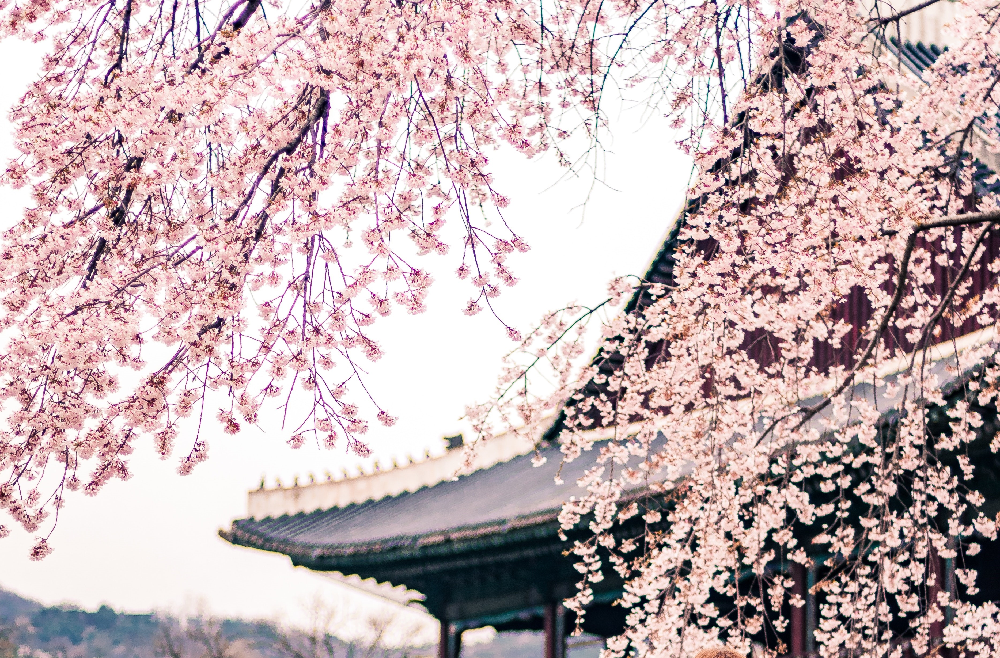

News
- S. Korea currently extends distancing rules for two more weeks ..... more
- Jon Henry's 'Stranger Fruit' opens; addresses racial discrimination ..... more
- Seoul area bans gatherings of five or more people until early January ..... more
- Seoul strengthens anti-virus measures as daily cases top 400 ..... more
- S. Korea tests drone taxi flight for first time in Seoul ..... more
source by: Arirang News
Events

- Seoul International Fireworks Festival
- Having spectacle performances, delicious foods and an assorted flea market
- Yeouido Cherry Blossom Festival
- Enjoying beautiful spring flowers and watching the outstanding Han river view
- Seoul Music Festival
- Experiencing diverse K-pop in an attractive city